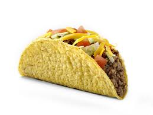

Home
Tex-mex tacos

Ingredients:
- Soft/hard tortillas
- Ground beef
- Taco spices
- Cheese
- Lettuce
- Tomato
- Sour cream
Instructions:
- Brown ground beef in a heated pan along with taco spices.
- Chop lettuce and tomatoes into small bits.
- Assemble tortillas with ground beef at the bottom, topped with lettuce, tomato, cheese, and sour cream as desired.